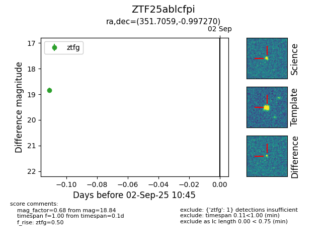

FINK: ZTF25ablcfpi
Lasair: ZTF25ablcfpi
ALeRCE: ZTF25ablcfpi
ZTF25ablcfpi (ztf,fink)
equatorial (ra, dec) = (351.7059,-0.99727)
galactic (l, b) = (81.5624,-56.91145)

last ztfg=18.84
1 ztfg detections